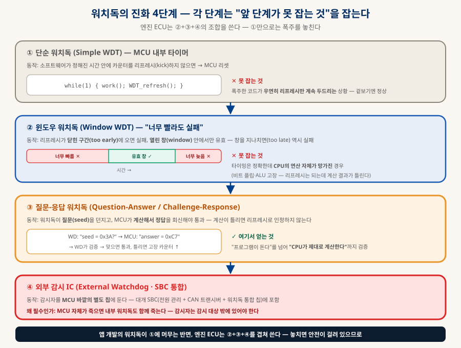
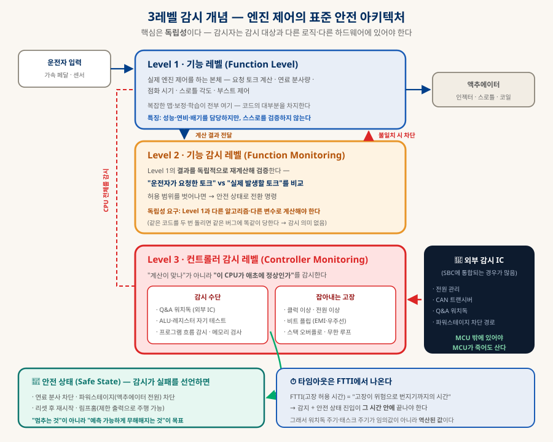
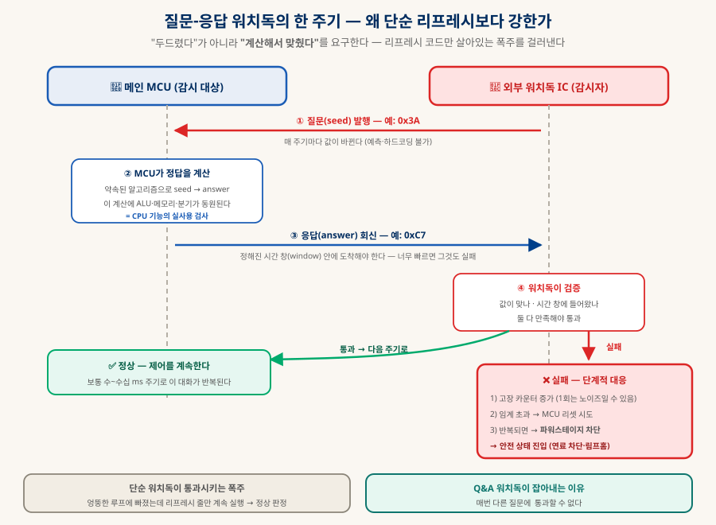

기능안전과 워치독
차량 ECU의 워치독은 왜 다른가
앱에서 워치독은 "죽으면 되살리는 편의 기능"이지만, 엔진 ECU에서는 폭주를 안전 상태로 유도하는 최후의 방어선이고 인증의 전제 조건이다. 단순 타이머에서 질문-응답 방식까지의 진화, 엔진 제어의 표준인 3레벨 감시 구조, 그리고 "실제로 얼마나 비싼가"를 하드웨어·연산·개발 공수로 나눠 정리한다.
0. 한눈에 보기 — 결론 네 줄
급한 사람을 위한 요약
선택이 아니다 (§8)
감시 아키텍처 (§3)
"계산해 맞췄다" (§4)
아니라 설계·검증 (§7)
1. "워치독"은 하나가 아니다 — 앱과 차량은 다른 물건이다
같은 이름을 쓰는 네 가지를 먼저 가른다
| 종류 | 누가 무엇을 감시 | 내가 만드나 | 성격 |
|---|---|---|---|
| ① OS 워치독 iOS Watchdog · 안드로이드 ANR | OS가 내 앱을 감시 | ❌ 아니다 | 내가 만드는 기능이 아니라 안 걸리게 피해야 할 대상 — 메인 스레드를 막지 않는 것이 전부 |
| ② 프로세스 워치독 systemd · PM2 · Docker | 감시자가 내 서버 프로세스를 | ⭕ 설정 한 줄 | 죽으면 되살린다 — 관리형 플랫폼(Vercel 등)이면 이미 되어 있다 |
| ③ 외부 헬스체크 uptime 모니터링 | 외부 서비스가 내 서비스를 | ⭕ 가입·연결 | "프로세스는 살았는데 응답 못 하는" 상태를 잡는다 (「SaaS 해부」 §4-D) |
| ④ 하드웨어 워치독 차량 ECU · 임베디드 | 칩이 MCU 자신을 | ⭕ 설계 대상 | 이 문서의 주제 — 고장을 안전 상태로 유도하는 안전 메커니즘 |
2. 워치독의 진화 4단계
각 단계는 "앞 단계가 못 잡는 것"을 잡기 위해 생겼다

| 단계 | 통과 조건 | 이 단계가 새로 잡는 고장 |
|---|---|---|
| ① 단순 WDT | 정해진 시간 안에 리프레시 | 완전 정지 — 무한 루프·데드락·행 |
| ② 윈도우 WDT | 리프레시가 열린 창 안에 도착 (너무 빨라도 실패) | 주기가 어긋난 폭주 — 리프레시만 미친 속도로 도는 코드 |
| ③ Q&A 워치독 | 질문에 계산으로 정답을 회신 + 시간 창 준수 | 연산 능력 자체의 고장 — 비트 플립·ALU 이상 (리프레시는 되는데 계산이 틀림) |
| ④ 외부 감시 IC | ③을 MCU 밖의 칩이 판정 | MCU 전체의 사망 — 클럭 정지·전원 이상 (내부 워치독은 같이 죽는다) |
2-1. 윈도우 워치독의 타이밍 — 왜 "너무 빨라도" 실패인가
단순 워치독의 구멍이 직관적이지 않으니 시간축에서 보자. 세 케이스를 같은 시간선에 나란히 놓고 커서를 지나가게 하면, ②가 왜 필요한지가 보인다:
3. 3레벨 감시 개념 — 엔진 제어의 표준 구조
워치독은 이 구조의 3층에 들어간다 — 이 문서의 심장
가솔린·디젤 엔진 제어에는 업계에서 널리 공유된 안전 아키텍처가 있다(E-Gas 감시 개념으로 알려진 3단 구조). 요점은 "제어하는 자"와 "검증하는 자"와 "검증자가 정상인지 보는 자"를 분리하는 것이다:

| 레벨 | 하는 일 | 구현 요점 |
|---|---|---|
| Level 1 기능 | 실제 엔진 제어 — 토크 계산·연료 분사·점화·스로틀 | 코드의 대부분. 복잡한 맵과 보정·학습이 여기 — 스스로를 검증하지 않는다 |
| Level 2 기능 감시 | Level 1의 결과를 독립적으로 재계산해 비교 — "요청 토크 vs 실제 발생 토크"가 허용 범위 안인가 | 독립성이 생명: 다른 알고리즘·다른 변수·단순화된 경로로 계산해야 한다. 같은 코드를 두 번 돌리면 같은 버그에 똑같이 당한다 |
| Level 3 컨트롤러 감시 | "계산이 맞나"가 아니라 "이 CPU가 정상인가" | Q&A 워치독(외부 IC) · ALU·레지스터 자기 테스트 · 프로그램 흐름 감시 · 메모리 검사 |
4. 질문-응답 워치독 — 한 주기를 뜯어보기
"두드렸다"가 아니라 "계산해서 맞췄다"를 요구하는 방식

핵심은 매 주기마다 질문이 바뀐다는 점이다 — 그래서 정답을 미리 저장해둘 수 없고, 통과하려면 실제로 계산을 수행해야 한다. 이 계산에 ALU·레지스터·메모리 접근·분기가 동원되므로 결과적으로 CPU 핵심 기능의 실사용 검사가 된다. 단순 리프레시로는 확인할 수 없던 층이 이렇게 덮인다.
5. 워치독 옆의 안전 메커니즘들
워치독 하나로는 부족하다 — 함께 배치되는 것들
| 메커니즘 | 무엇을 하나 | 워치독이 못 하는 무엇을 채우나 |
|---|---|---|
| 프로그램 흐름 감시 Program Flow Monitoring | 코드가 정해진 순서대로 실행됐는지 체크포인트로 검증 | 워치독은 "돌고 있나"만 본다 — 이건 "제대로 된 길로 돌고 있나"를 본다(잘못된 점프·함수 건너뛰기) |
| Lockstep 코어 | 두 코어가 같은 연산을 동시에 수행하고 결과를 하드웨어가 비교 | 고장을 즉시 감지한다(주기를 기다리지 않음). 높은 ASIL에서 흔히 채택 |
| 메모리 보호 (MPU) | 태스크별 메모리 접근 권한 분리 | 낮은 등급 코드가 안전 관련 데이터를 훼손하는 것을 차단 — 간섭 없음(freedom from interference) |
| ECC · 메모리 검사 | RAM·플래시의 비트 오류 검출·정정 | 비트 플립을 사용 시점에 잡는다 |
| 중복 저장 · 역수 저장 | 중요 변수를 두 벌(또는 보수 형태로) 저장해 비교 | 변수 하나가 조용히 변질되는 것을 잡는다 |
| 시간 감시 Deadline Monitoring | 태스크가 마감 안에 끝났는지 | 워치독은 전체 정지를 잡지만, 이건 특정 태스크의 지연을 잡는다 |
6. AUTOSAR WdgM — 소프트웨어에서의 모습
앱의 워치독이 한 축인 반면, 여기는 세 축을 따로 본다
WdgM (Watchdog Manager) ← 감시 대상(Supervised Entity)들을 관리·판정 ├─ Alive Supervision 주기적으로 살아있나 (횟수가 예상 범위인가) ├─ Deadline Supervision 체크포인트 간 소요가 마감 안인가 └─ Logical Supervision 허용된 실행 순서(그래프)를 따랐나 WdgIf (Watchdog Interface) ← 상위와 드라이버를 잇는 층 Wdg (Driver) ← 내부/외부 워치독 하드웨어를 실제로 조작
| 감시 종류 | 잡아내는 것 | 예 |
|---|---|---|
| Alive Supervision | 너무 자주 / 너무 드물게 실행 — 주기의 이상 | 10ms 태스크가 100ms 동안 3번만 돌았다 → 이상 |
| Deadline Supervision | 시작과 끝 사이 소요 시간의 이상 | 센서 읽기가 2ms 안에 끝나야 하는데 8ms 걸렸다 |
| Logical Supervision | 실행 순서의 이상 | 초기화 → 진단 → 제어 순서인데, 진단을 건너뛰고 제어로 갔다 |
앱 개발의 워치독이 "프로세스가 살아있나" 하나였던 것과 비교하면 차이가 분명하다 — 여기서는 살아있나 · 제때 끝났나 · 올바른 순서인가를 각각 다른 메커니즘으로 확인한다. 그리고 이 판정 결과가 최종적으로 하드웨어 워치독의 리프레시(또는 Q&A 응답) 여부로 이어진다 — 소프트웨어 감시가 통과해야만 하드웨어 감시를 만족시켜 준다는 사슬 구조다.
7. 리소스 — 실제로 얼마나 드나
하드웨어·연산·메모리는 싸고, 비싼 것은 다른 데 있다
| 항목 | 비용 수준 | 내용 (수치는 구현마다 크게 다름 — 개략) |
|---|---|---|
| 내부 WDT | 0 | MCU에 이미 내장 — 레지스터 설정만 하면 된다 |
| 외부 워치독 IC | 거의 0 | 대개 SBC(전원 관리 + CAN 트랜시버 + 워치독 통합 칩)에 포함되므로 별도 부품이 아니다. 단독 IC를 쓰면 부품 하나 추가 수준 |
| Lockstep 코어 MCU | 유의미 | 높은 ASIL에서 채택 — 여기서 원가 차이가 실제로 생긴다(코어를 두 벌 얹은 셈이므로) |
| CPU — 단순 리프레시 | 무시 가능 | 주기당 마이크로초 단위 |
| CPU — Q&A 워치독 | 1% 미만 | 보통 10ms 급 태스크에서 처리 — seed 계산과 통신이 전부 |
| CPU — Level 2 기능 감시 | 수~십 % | 여기가 진짜 부하다 — Level 1의 상당 부분을 독립적으로 재계산하므로. 워치독 자체보다 훨씬 무겁다 |
| 메모리 (RAM) | 수 KB | WdgM의 상태·카운터·그래프 정보 |
| 개발 공수 | 비용의 본체 | 안전 요구사항 도출·아키텍처 문서·FMEA/FTA·검증 시험·툴 적격성·추적성(traceability) 관리. ASIL D에서는 코드보다 문서와 검증이 더 큰 일이 되는 것이 보통 |
8. ASIL별 요구 수준 — 어디에 어디까지
모든 ECU가 같은 워치독을 쓰지는 않는다
ISO 26262는 위험도를 ASIL A~D로 나눈다(D가 가장 엄격, 안전과 무관한 것은 QM). 등급은 "고장 시 얼마나 위험한가 × 얼마나 자주 노출되나 × 운전자가 회피할 수 있나"로 정해지며, 등급이 오를수록 요구되는 안전 메커니즘이 촘촘해진다:
| 등급·성격 | 해당 ECU 예 | 워치독 수준 |
|---|---|---|
| ASIL C~D 안전 핵심 | 엔진 제어 · 제동(ESC) · 조향(EPS) · 에어백 · ADAS | 3레벨 감시 전체 + Q&A 외부 워치독 + 프로그램 흐름 감시 (+ Lockstep 코어가 흔함) |
| ASIL A~B 안전 관련 | 일부 섀시·바디 제어 · 조명 일부 | 윈도우 워치독 + 기본 감시 — 3레벨을 완전히 갖추지 않는 경우도 있다 |
| QM 비안전 | 인포테인먼트 · 시트 · 편의 기능 | 단순 WDT로 충분 — 목적이 "안전"이 아니라 "재부팅으로 복구"다 (앱의 워치독과 성격이 같아진다) |
9. 함께 읽기
이 문서에서 갈라지는 길들
| 주제 | 문서 |
|---|---|
| 소프트웨어 워치독 — 서버·앱 쪽의 그것 | 「SaaS 해부」 §4-D (모니터링·헬스체크) · 「앱 출시의 관문」 §3 (크래시·강제 업데이트) |
| 물리 세계를 제어하는 AI·로봇의 안전 | 「피지컬 AI」 — 센서·액추에이터·실시간 제약 |
| "책임의 크기로 고른다"는 사고법 | 「데이터베이스 완전 정리」 §9 — 같은 판단 구조의 다른 도메인 |
| 기계 게이트로 품질을 지키는 방식 | 「AI 시대의 개발 프로세스」 §4 — 리뷰 피라미드의 1층 |